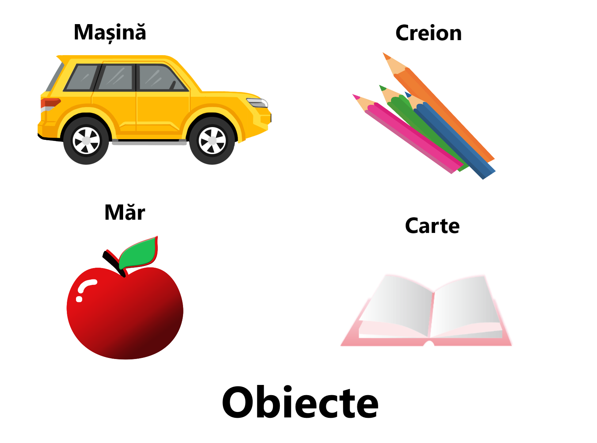
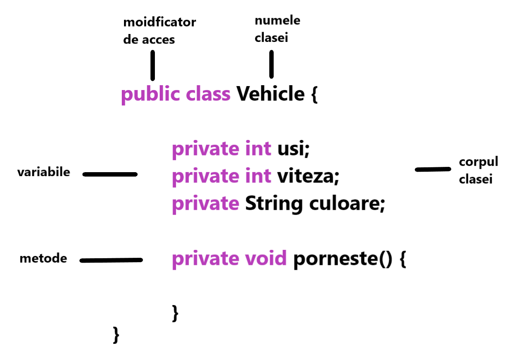
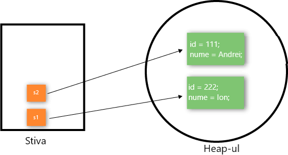

Clasă și Obiect în Java
Principiile OOP
În imaginea de mai jos se pot observa principiile programării orientate pe obiect. Acestea sunt așezate pe diferite nivele fiecare principiu provenind din altul.
În această pagină, vom afla despre obiecte și clase Java. În tehnica de programare orientată obiect,
proiectăm un program folosind obiecte și clase acestea fiind bazele programării pe obiect.
Un obiect în Java este entitatea fizică și logică, în timp ce o clasă în Java este doar o entitate logică.

Ce este un obiect în Java?
O entitate care are stare și comportament este cunoscută ca obiect, de exemplu, scaun, bicicletă, marcator,
stilou, masă, mașină etc. Poate fi fizică sau logică (tangibilă și intangibilă). Exemplul unui obiect
intangibil este sistemul bancar.
Un obiect are trei caracteristici:
- Stare: reprezintă datele (valoarea) unui obiect.
- Comportament: reprezintă comportamentul (funcționalitatea) unui obiect precum depunerea, retragerea etc.
- Identitate: O identitate de obiect este de obicei implementată printr-un ID unic. Valoarea ID-ului nu este vizibilă pentru utilizatorul extern. Cu toate acestea, este utilizat intern de JVM pentru a identifica fiecare obiect în mod unic.
De exemplu, Pen este un obiect. Numele său este BIC; culoarea este albă, cunoscută sub numele de starea sa. Se folosește pentru a scrie, deci scrisul este comportamentul său.
Un obiect este o instanță a unei clase.O clasă este un șablon sau plan din care sunt create
obiecte. Deci, un obiect este instanța (rezultatul) unei clase.
Definiții de obiecte:
- Un obiect este o entitate din lumea reală.
- Un obiect este o entitate de execuție.
- Obiectul este o entitate care are stare și comportament.
- Obiectul este o instanță a unei clase.
Ce este o clasă în Java?

O clasă este un grup de obiecte care au proprietăți comune. Este un șablon sau plan din care sunt create
obiecte. Este o entitate logică. Nu poate fi fizic.
O clasă în Java poate conține:
- Câmpuri
- Metode
- Constructori
- Blocuri
- Clasa și interfața imbricate
Sintaxa pentru a declara o clasă:
class <numele_clasei>{
câmpuri;
metode;
}
Variabilă de instanță în Java
O variabilă care este creată în interiorul clasei, dar în afara metodei este cunoscută ca o variabilă de instanță. Variabila de instanță nu obține memorie în momentul compilării. Obține memorie în timpul rulării atunci când este creat un obiect sau o instanță. De aceea este cunoscut ca o variabilă de instanță.
Exemplu
În acest exemplu, creăm cele două obiecte ale clasei Student și inițializăm valoarea acestor obiecte prin invocarea metodei adaugareStudent(). Aici afișăm starea (datele) obiectelor prin invocarea metodei afisare().
Student.java
public class Student{
int id;
String nume;
//crearea unui constructor cu doua argumente
void adaugareStudent(int i,
String n){
this.id = i;
this.nume = n;
}
void afisare(){
System.out.println(id + " " + nume
" " + varsta);
}
public static void main(String args[]){
//apelare constructor
Student s1 = new Student(111, "Andrei");
Student s2 = new Student(111, "Ion");
s1.afisare();
s2.afisare();
}
}
Afișare:
111 Andrei 0
222 Ion 25

După cum puteți vedea în figura de mai sus, obiectul obține memoria în zona de memorie heap. Variabila de referință se referă la obiectul alocat în zona de memorie heap. Aici, s1 și s2 sunt variabile de referință care se referă la obiectele alocate în memorie.
Obiect anonim
Anonim înseamnă pur și simplu fără nume. Un obiect care nu are nicio referință este cunoscut ca obiect
anonim. Poate fi utilizat numai în momentul creării obiectului.
Dacă trebuie să utilizați un obiect o singură dată, un obiect anonim este o abordare bună. De exemplu:
new Calculation(); //obiect anonim
Metoda de apelare printr-un obiect anonim
new Calculation().fact(5);
Să vedem exemplul complet al unui obiect anonim în Java.
Calculation.java
public class Calculation{
void fact(int n){
int fact = 1;
for(for i
= 1; i <= n; i++){
fact = fact * i;
}
System.out.println("Factorialul este" +
fact);
}
public static void main(String args[]){
new Calculation().fact(5);//apelare obiect anonim
}
}
Afișare:
Factorialul este 120